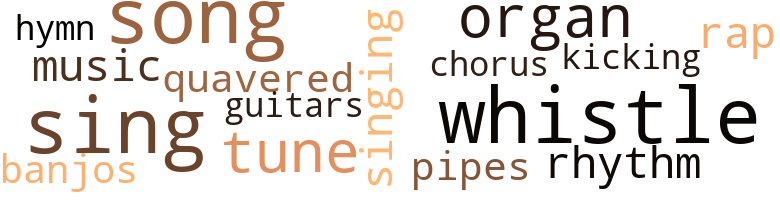
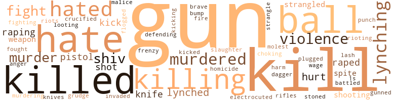
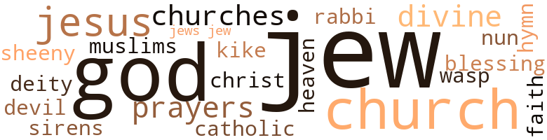

Soul on Fire, by Farmer, Clarence (1969)
27 music-related terms matched in this text.
Most frequent terms in this topic: sing (3); songs (2); whistle (2); song (2); whistles (2)
banjo.n.01
Definition: a stringed instrument of the guitar family that has long neck and circular body
| word | sentence |
|---|---|
| banjos | Lying there in my expensive bed on the second floor of the house in which I live alone and like it in that fun-loving darkeytown called Harlem , where the banjos plink all day long and vast quantitites of coon delicacies such as fried chicken , watermelon , hog jowls , chitterlings and black-eyed peas are consumed by the happy jiga-boos , I opened my pajamas and took out my beautiful black cock . |
chorus.n.01
Definition: any utterance produced simultaneously by a group
| word | sentence |
|---|---|
| chorus | Another bottle broke a window and there was a chorus of boozy redneck voices , all calling for the smart nigger to come out and show himself . |
guitar.n.01
Definition: a stringed instrument usually having six strings; played by strumming or plucking
| word | sentence |
|---|---|
| guitars | Even then I had fucked a few white bitches , mostly down in the Village , but you could n't count screwing bagel babies with hairy legs and guitars they could n't play as the real thing . |
hymn.n.01
Definition: a song of praise (to God or to a saint or to a nation)
| word | sentence |
|---|---|
| hymn | " I know that hymn , " he said , adding no Mister Macs . |
kick.v.04
Definition: kick a leg up
| word | sentence |
|---|---|
| kicking | Then they were all over my father , kicking and beating him . |
music.n.01
Definition: an artistic form of auditory communication incorporating instrumental or vocal tones in a structured and continuous manner
| word | sentence |
|---|---|
| music | The motherfucker could n't carry a tune in a bushel , as black and white say in Georgia , but , I suppose , being a blue-black nigger from sunny climes he just knew he had a natural sense of rhythm , a gift of negroid song - that hand-clapping , mindless , teeth-displaying , , sweat-rolling , shoulder-shaking , ass-wagging , crotch-bulging way that all niggers have with simple and simple-minded music . |
organ.n.05
Definition: wind instrument whose sound is produced by means of pipes arranged in sets supplied with air from a bellows and controlled from a large complex musical keyboard
| word | sentence |
|---|---|
| organ | One crazy son of a bitch started playing a mouth organ . |
| organ | It got quiet suddenly except for the halfwit with the mouth organ . |
pipe.n.04
Definition: a tubular wind instrument
| word | sentence |
|---|---|
| pipes | They ca n't help poor folks all the time ; there are art galleries to be opened , pot parties to be held where the liberal white ladies smoke their grass delicately in tiny jeweled pipes . |
rap.n.05
Definition: genre of African-American music of the 1980s and 1990s in which rhyming lyrics are chanted to a musical accompaniment; several forms of rap have emerged
| word | sentence |
|---|---|
| rap | He stayed away from buying and selling counterfeit ration stamps ; that was a serious federal rap , almost as bad as dealing in counterfeit money . |
rhythm.n.04
Definition: the arrangement of spoken words alternating stressed and unstressed elements
| word | sentence |
|---|---|
| rhythm | The motherfucker could n't carry a tune in a bushel , as black and white say in Georgia , but , I suppose , being a blue-black nigger from sunny climes he just knew he had a natural sense of rhythm , a gift of negroid song - that hand-clapping , mindless , teeth-displaying , , sweat-rolling , shoulder-shaking , ass-wagging , crotch-bulging way that all niggers have with simple and simple-minded music . |
sing.v.02
Definition: produce tones with the voice
| word | sentence |
|---|---|
| Sing | Remember those old Warner Bros , movies in which the hero went to Sing Sing for , say , five years . |
| sing | He started to sing . |
| sing | Lena would sing a couple of yards of Stormy Weather , showing all her celebrated pearly teeth , and , Lena and Barbara being sisters , I would feel obliged to dedicate thirty or forty strokes to them . |
| sing | " But I ai n't going to sing it . " |
singing.n.01
Definition: the act of singing vocal music
| word | sentence |
|---|---|
| singing | The West Indian let me do most of the work while he sat around on his black ass , sucking on bottled beer and singing those awful God damned calypso tunes . |
song.n.01
Definition: a short musical composition with words
| word | sentence |
|---|---|
| song | People who did n't know one other thing about the New York subway system knew that the " quickest way to Harlem , " as the God damned big band song put it , was to take the fucking A-train . |
| song | The motherfucker could n't carry a tune in a bushel , as black and white say in Georgia , but , I suppose , being a blue-black nigger from sunny climes he just knew he had a natural sense of rhythm , a gift of negroid song - that hand-clapping , mindless , teeth-displaying , , sweat-rolling , shoulder-shaking , ass-wagging , crotch-bulging way that all niggers have with simple and simple-minded music . |
| songs | I grew to hate the foreign bastard and because of him I hated Harry Belafonte when he came along in the middle Fifties with his fucking happy-darkey Banana Boat songs and Brown Skinned Girls . |
| songs | I know they exist because Life magazine and the foundation-funded collectors of folk songs tell me so , and I know because I 've seen them on television specials , in Beaumont , Texas , and Harlem . |
tune.n.01
Definition: a succession of notes forming a distinctive sequence
| word | sentence |
|---|---|
| tunes | The West Indian let me do most of the work while he sat around on his black ass , sucking on bottled beer and singing those awful God damned calypso tunes . |
| tune | The motherfucker could n't carry a tune in a bushel , as black and white say in Georgia , but , I suppose , being a blue-black nigger from sunny climes he just knew he had a natural sense of rhythm , a gift of negroid song - that hand-clapping , mindless , teeth-displaying , , sweat-rolling , shoulder-shaking , ass-wagging , crotch-bulging way that all niggers have with simple and simple-minded music . |
warble.v.01
Definition: sing or play with trills, alternating with the half note above or below
| word | sentence |
|---|---|
| quavered | " Oh , Jesus , Mr. Masslin , " I quavered before I finished the drink . |
whistle.n.01
Definition: the sound made by something moving rapidly or by steam coming out of a small aperture
| word | sentence |
|---|---|
| whistles | Country niggers get to know the movement of trains from listening to their whistles . |
| whistles | Blocks away other whistles started to answer , then there were sirens . |
whistle.v.01
Definition: make whistling sounds
| word | sentence |
|---|---|
| whistle | There were no whistle noises and it did n't sound loud enough to be a train . |
| whistle | Instead of killing us he started blowing his whistle , for " assistance , " I guess . |
283 violence-related terms matched in this text.
Most frequent terms in this topic: kill (35); gun (29); killed (26); hate (25); balls (23)
anger.n.01
Definition: a strong emotion; a feeling that is oriented toward some real or supposed grievance
| word | sentence |
|---|---|
| anger | " You see that , " Petey screamed , going wild with anger . |
battle.v.01
Definition: battle or contend against in or as if in a battle
| word | sentence |
|---|---|
| battled | Henry George battled for space with Harness Your Hidden Powers . |
bump.n.01
Definition: a lump on the body caused by a blow
| word | sentence |
|---|---|
| bump | It was always open at the same page : the one which showed Betty doing a modified pelvic bump . |
craze.n.02
Definition: state of violent mental agitation
| word | sentence |
|---|---|
| frenzy | My father would n't fight them - he spent Sunday mornings re-reading Harness Your Hidden Powers , a work published by the Rosicrucians , I believe - and there was n't one fucking thing I could do except go and listen to Mr. Comerford come out in his shiny black suit and whip those country niggers into a frenzy of respectability . |
crucify.v.01
Definition: kill by nailing onto a cross
| word | sentence |
|---|---|
| crucified | Shot , hanged , burned alive with gasoline , blinded , branded , crucified , drowned , starved . |
dagger.n.01
Definition: a short knife with a pointed blade used for piercing or stabbing
| word | sentence |
|---|---|
| dagger | I did the whole cloak and dagger bit long before it became popular . |
electrocute.v.02
Definition: kill by electrocution, as in the electric chair
| word | sentence |
|---|---|
| electrocuted | I did n't want to be electrocuted for killing just one white queer . |
engage.v.07
Definition: carry on (wars, battles, or campaigns)
| word | sentence |
|---|---|
| wage | People , black or white , mean nothing to me : I try to ignore the blacks , I wage war against the whites . |
fight.n.05
Definition: a boxing or wrestling match
| word | sentence |
|---|---|
| fight | She did n't really make a fight of it until she felt me starting to come . |
fight.v.02
Definition: fight against or resist strongly
| word | sentence |
|---|---|
| fighting | There were a lot of black men in their Uncle Sam 's army and some of them , the stupid bastards , made quite a name for themselves as fighting coons . |
| fought | The war being fought on behalf of Messrs. Hitler , Churchill and Roosevelt had n't touched us much in our comer of happy Georgia . |
| fight | I was on my own and I was going to fight Whitey in my own way , on my own time . |
| fight | As far as I was concerned , and still am , every black man had to fight his own fucking war . |
| defending | Even a nigger in America can find a comer of the country , even in the South , or a job , since I believe the U.S. Forestry Service now takes niggers , where he can get away from defending every day the color of his skin , the liver in his lip , the kink in his hair . |
| fight | Before I became old enough to fight them , they would make me accompany them to Mr. Comer-ford 's come-to-Jesus Baptist church . |
| fight | My father would n't fight them - he spent Sunday mornings re-reading Harness Your Hidden Powers , a work published by the Rosicrucians , I believe - and there was n't one fucking thing I could do except go and listen to Mr. Comerford come out in his shiny black suit and whip those country niggers into a frenzy of respectability . |
flog.v.01
Definition: beat severely with a whip or rod
| word | sentence |
|---|---|
| flogged | If McCall had n't been there I think they might have flogged my father 's bony black ass with a barrel stave and gone away from there , killing the hist of the whiskey and telling themselves there 's one nigger ai n't about to cause no trouble . |
gag.v.06
Definition: cause to retch or choke
| word | sentence |
|---|---|
| choking | While I was choking the life out of her I kept fucking her at the same time . |
garand_rifle.n.01
Definition: a semiautomatic rifle
| word | sentence |
|---|---|
| M-1s | After all the riots , all the burning and looting , all the redneck Guardsmen killing black men with their cute little M-1s , all the shit that 's been thrown back and forth since Watts , Mister Charlie still takes his white ass up to Harlem and looks to get it laid They 're all dead , gone to Nigger Heaven - Bird , Malcolm X , Martin King , Medgar Evars , Emmett Till . |
grudge.n.01
Definition: a resentment strong enough to justify retaliation
| word | sentence |
|---|---|
| grudge | For a while I thought maybe the two cops had done the job on their own because of some personal grudge against Blakely . |
gun.n.01
Definition: a weapon that discharges a missile at high velocity (especially from a metal tube or barrel)
| word | sentence |
|---|---|
| guns | The sheriff and the deputy were just other crackers with badges and guns . |
| gun | The sheriffs gun was in a holster with a flap on it , so I could n't see what sort of gun it was . |
| gun | The sheriffs gun was in a holster with a flap on it , so I could n't see what sort of gun it was . |
| guns | I was n't interested in the sheriff or the deputy or the guns they carried . |
| guns | It 's just that a black man , North or South , is always aware of the white man 's guns . |
| gun | " Put away the gun . " |
| gun | The deputy drew his gun again . |
| gun | " Will you put away that fucking gun . |
| guns | Whitey is a crafty mother ; he has the brains and the guns ; he is n't about to lie down and eat shit because a bunch of pants pressers , floor waxers and department store porters get dressed up in funky black costumes and walk around looking meaner than John Wayne does when he goes after a Jap pillbox . |
| guns | Old Marlon had that cigar going just right when the police car pulled into the alley sideways , blocking it , and these two old-looking cops jumped out , guns drawn . |
| gun | He swung his gun on me and I stayed still . |
| gun | The really fucked-up cons bypass the alcohol and the dope and get hold of a gun . |
| guns | Corraled six bad niggers with sub machine guns . |
| gun | I thought how easy it would be , with that gun in my hand , to make him beg for his life , to lick my shoes , to suck my black prick , if that 's what I had in mind . |
| gun | The gun I bought from a guy who sold and rented guns to hit men and stick-up men was a .38 Special . |
| gun | I decided on the four-inch job after the jolly gun dealer told me that , because a recent shipment had been diverted , he was fresh out of silencers . |
| gun | That the Jew might have a gun had occurred to me . |
| gun | The Jew gaped when he saw the gun . |
| gun | I was very calm , no insults , no gun waving , no unnecessary threats . |
| gun | I had put the gun back in my pocket . |
| gun | I jammed the potato onto the muzzle of the gun . |
| gun | There was absolutely no reason to sleep with the gun under my pillow . |
| gun | I was no ordinary ex convict nigger with a gun ; I was me . |
| gun | " You know who I am ? " he said , eyes front , not making any move for the gun I knew he carried in a shoulder holster . |
| gun | " You keep the money on the other side from the gun , " I said . |
| gun | No matter how fast he moved , he knew the ice pick in his brain would make his fingers stop working before they closed around the butt of the gun . |
| gun | I did n't ask him to hand over the gun . |
| gun | I wanted the gun to stay where it was . |
| gun | What came out , naturally , was my gun . |
| gun | Just as he was about to perforate my thick Nigra skull , an elderly gentleman in an immaculate white suit and black string-tie stepped forward and pushed the gun barrel aside with a lean aristocratic hand . |
| gun | We did n't have a gun in the house , not even an old single-barrel like some country niggers used for shooting rabbits . |
| gun | My father , always proudly insistent that he was n't just any ordinary country nigger , did n't see any reason to keep a gun for hunting anything . |
| gun | Probably I would n't have done anything , gun or no gun . |
| gun | Probably I would n't have done anything , gun or no gun . |
| gun | I wish to hell he could have died with a machine gun bucking in his hands . |
gun.v.01
Definition: shoot with a gun
| word | sentence |
|---|---|
| gunned | The horns on the two trucks started blasting and one of the drivers gunned the motor hard . |
hate.n.01
Definition: the emotion of intense dislike; a feeling of dislike so strong that it demands action
| word | sentence |
|---|---|
| hate | The weakness in my body was replaced by a sudden surge of hate , and I came up off the road like a crazed animal . |
| hate | I do n't go looking for white men every night , just when the hate moves me . |
| hate | I may be engrossed in something else , yet the need to do something about my hate for whitey is always burning in the back of my skull . |
| hate | Charlie Whitman did as good as that , up there on the Texas Tower ; It 's not that I 'm afraid to die ; I want to live i for the sole reason that my hate would die if I died . |
| hate | I want to live for my hate . |
| hate | I live for myself , for my hate . |
| hate | That particular night the hate was Working on me real good , and I decided killing a white man would make me feel better . |
| hate | Now there I was lying in my king-sized bed the day after the night before , reading about my old pussy hunting chum Bill , and the hate in my skull hint worse than ever . |
| hate | That old boy had grown hard with hate , thinking about the dead professor 's sexy little teenage daughters . |
| hate | In the days , as a teenager , when I hated Whitey as a matter of course but the hate still had n't taken possession of my soul , I would see some woman in the street and then try to remember what she looked like , what her ass and box looked like , when I got home and started to Jerk off . |
| hate | I do n't think Mrs. Roosevelt ever screwed a nigger in her painfully long life , but even if she had I think I 'd hate her more than I do now , and that would be an awful lot of hate . |
| hate | Inside , I was shaking with hate . |
hate.v.01
Definition: dislike intensely; feel antipathy or aversion towards
| word | sentence |
|---|---|
| hate | New York being a melting pot , all the cops are simply cops , and they all hate niggers , even the nigger cops . |
| hated | One step up from the exploited niggers were the other niggers , the smart ones who hated Whi-tey but worked with him . |
| hate | I grew to hate the foreign bastard and because of him I hated Harry Belafonte when he came along in the middle Fifties with his fucking happy-darkey Banana Boat songs and Brown Skinned Girls . |
| hated | I grew to hate the foreign bastard and because of him I hated Harry Belafonte when he came along in the middle Fifties with his fucking happy-darkey Banana Boat songs and Brown Skinned Girls . |
| hate | I did n't hate her any less because she was more confused than professional ; there was no great urge to kill her , is what I mean . |
| hate | So long as I 'm free and alive I can hate white and I can do something about it . |
| hate | I do n't hate you . |
| hate | I did n't hate the old cocksucker any more for that . |
| hated | The son of a bitch was dead - I wondered if the undertaker had stitched his goodies back in place - and I still hated him . |
| hated | The dead ofay was a Canadian , just like he 'd said , and there were no niggers in Canada , therefore no nigger problem , and yet I hated him . |
| hate | I even believed that he did n't hate me , did n't have a single thing against me , and still I wanted him to come back to life so I could kill him all over again . |
| hate | Sometimes I think I hate ofay children worse than their fathers and mothers . |
| hate | I do n't know why , but I think I hate that beautiful white bitch more than any other woman in the world . |
| hated | In the days , as a teenager , when I hated Whitey as a matter of course but the hate still had n't taken possession of my soul , I would see some woman in the street and then try to remember what she looked like , what her ass and box looked like , when I got home and started to Jerk off . |
| hated | How I hated those pre-hippy cunts ! |
| hated | I hated these New York Central cunts , but I wanted them too , at least , in my mind , because that 's all I thought a poor black liver-lipped nigger like me could have . |
| hated | The crackers hated F.D.R. and so do I. I think I hate his bucktoothed wife even more , if that 's possible . |
| hate | The crackers hated F.D.R. and so do I. I think I hate his bucktoothed wife even more , if that 's possible . |
| hate | I do n't think Mrs. Roosevelt ever screwed a nigger in her painfully long life , but even if she had I think I 'd hate her more than I do now , and that would be an awful lot of hate . |
| hated | I knew my father was n't much of a man , but I guess I loved the pompous half-literate poor bastard , and I hated my mother when she tried to tear him down . |
| hated | I had a father and mother , and I loved one and hated the other , and what 's so un-American about that ? |
| hate | Whitey does n't have to do anything to you , not directly , to make you fear him and hate him . |
| hate | I knew I would hate to lose him . |
| hated | At the same time I hated him because he was putting me and my black cock in danger . |
homicide.n.01
Definition: the killing of a human being by another human being
| word | sentence |
|---|---|
| homicide | Today Marlon Blakely 's murder would have been explained as justifiable homicide , as police officers acting nobly in the course of duty . |
injury.n.01
Definition: any physical damage to the body caused by violence or accident or fracture etc.
| word | sentence |
|---|---|
| hurt | The insults and that back-of-the-bus stuff hurt , but that was just a cover-up for the other thing . |
| harm | ' Why you doin this to me , Mister McCall ? " my father said , " I ai n't never done you no harm . " |
invade.v.01
Definition: march aggressively into another's territory by military force for the purposes of conquest and occupation
| word | sentence |
|---|---|
| invaded | Today the " natural " hairdo may have invaded the black middle class , yet in the depths of their semi-African hearts you know well that they would give anything for a hair-straightening treatment that would last as long as their lives . |
kick.v.04
Definition: kick a leg up
| word | sentence |
|---|---|
| kicking | Then they were all over my father , kicking and beating him . |
kick_back.v.02
Definition: spring back, as from a forceful thrust
| word | sentence |
|---|---|
| kick | I did n't know a thing about formal law ; I did know the law for niggers - when a nigger starts quoting the law , kick him in the balls . |
| kick | Conservative Whiteys do n't have to kick a nigger in the balls to make him ache . |
| kicked | He was trying to stand up and I kicked him in the balls , knocking him back against the fence . |
| kick | He tried to squirm out from under the gleaming blade , and I had to kick him a couple of times in the chest to keep him quiet . |
kill.v.10
Definition: cause the death of, without intention
| word | sentence |
|---|---|
| killing | After all the riots , all the burning and looting , all the redneck Guardsmen killing black men with their cute little M-1s , all the shit that 's been thrown back and forth since Watts , Mister Charlie still takes his white ass up to Harlem and looks to get it laid They 're all dead , gone to Nigger Heaven - Bird , Malcolm X , Martin King , Medgar Evars , Emmett Till . |
| killed | I know the deputy would have killed me and thought nothing about it . |
| kill | I see you again I 'll kill you . |
| killing | I did n't think about raping and killing the woman , even when the wagon got closer , and I saw that she was young , maybe about seventeen , and pretty . |
| killed | " Well , boy , you jus get youself out that road fore you get yourself killed . " |
| killed | I might not have raped and killed her if she had n't said that . |
| killing | Raping and killing the white girl had been so easy . |
| killing | She had died faster than my father had , so there was nothing all that special about white cunts , about killing white cunts after you had fucked them . |
| killed | If they killed me it would n't be for nothing , like my father or all the other poor bastards who had been murdered just for being there when a bunch of cracker bastards felt like killing something black . |
| killing | If they killed me it would n't be for nothing , like my father or all the other poor bastards who had been murdered just for being there when a bunch of cracker bastards felt like killing something black . |
| killed | The next time I killed a white woman , I told myself , I would pick the time and the place . |
| kill | I did n't even question the idea that I would kill other whites . |
| kill | Even as recently as the Forties , during the war , when I arrived in New York , most of the cops were sweating , redfaced Irish immigrant Micks , mean as any Southern deputy and fast on the draw when it came to niggers , but New York being what it is , New York politics being what they are , they were n't quite as quick to kill a nigger as they would be in , say , Baltimore . |
| kill | They did n't kill as many niggers as Georgia did ; they beat a lot of niggers over the head . |
| kill | Nowadays , after Watts and Newark and Detroit , the New York cops may kill an occasional nigger ; they do n't beat as many over the head . |
| kill | I did my best to kill him , but it just is n't easy to kill any kind of man , even a white short-order cook , with a shoe . |
| kill | I did my best to kill him , but it just is n't easy to kill any kind of man , even a white short-order cook , with a shoe . |
| killed | The fact that Whitey killed and brutalized other black men might prove to me what a vicions bastard Whitey was . |
| killed | The night the cops killed Blakely I was helping to unload a panel truck full of frozen steaks in an alley beside a restaurant on 125th Street . |
| killed | I had been working with the West Indian for six months , and learning a lot , when the white cops killed old Marlon Blakely . |
| kill | I wanted his job , but I was fairly sure I would kill him if he gave me the kind of answer I thought he might give . |
| killed | It did n't matter because the whole black market thing fell apart when the white cops killed Marlon Blakely . |
| killed | The cop who killed old Marlon kept yelling , " I said hold it . " |
| killing | Instead of killing us he started blowing his whistle , for " assistance , " I guess . |
| killed | The man with the vest said it was a terrible business , a man getting killed and all . |
| kill | I went upstate to start serving my five , still not knowing why those two white cops had been sent to kill old Marlon , or why . |
| killed | The idea that old Marlon might have been killed because he was late with his pay-off money did n't make sense . |
| kill | Anyway , they would n't kill him for that , not unless they warned him first . |
| killed | I never did find out why they murdered Blakely , but there was someone big behind it , because six weeks after the killing I was still in the Tombs , still awaiting trial , when I read in the paper that the two patrolmen who killed Blakely had been promoted to the detective force . |
| kill | The nigger did n't want to just bugger me ; the bastard wanted to kill me . |
| kill | I knew that even if I managed to kill Red , the boss queer , without being seen , the guards would start asking questions . |
| killing | I did n't want to be electrocuted for killing just one white queer . |
| killed | The hook-nosed motherfucker was worried about getting robbed and killed . |
| killing | Though I had no intention of robbing and killing the kike , I allowed myself to think about it for a while . |
| kill | While he was telling me how to get to a place I did n't want to go , I thought about how easy it would be to take away his .35 and kill him with it , bringing all his young cop ambitions to an abrupt nothing . |
| killed | If I killed him there would be an Inspector 's Funeral , the for a dead pig . |
| kill | Some criminals will gladly kill a man , then fall apart at the thought of killing a woman . |
| killing | Some criminals will gladly kill a man , then fall apart at the thought of killing a woman . |
| kill | Others will kill women but not children . |
| kill | Others will slaughter children but hesitate to kill a nun or a woman with red hair or a parish priest while he is reading Mass . |
| kill | I did n't hate her any less because she was more confused than professional ; there was no great urge to kill her , is what I mean . |
| killed | Also , it increased the chance of being killed while committing a crime of violence . |
| kill | That 's how it is with hold-ups : no matter how well you plan a stick-up there is always the chance that some cop or plainclothes man or prison guard on his way home from work will kill you with his .38 Special . |
| kill | It would be a pleasure to rob him and kill him . |
| killing | Nowadays , with all the Black Power shit , they 're always carrying on about running the Jews out of Harlem and killing the ones who refuse to leave their blood-sucking businesses . |
| killing | For all I knew , hitting him then might have been as safe as robbing and killing him at seven o'clock . |
| kill | " Do n't kill me . " |
| killing | I knew now that I did n't need it until killing time . |
| kill | " You kill me , jah ? " he said , standing there behind the counter . |
| Killing | Killing the Jew had been pleasurable and profitable , but I would have killed him anyway , even if there had been no pleasure for me . |
| killed | Killing the Jew had been pleasurable and profitable , but I would have killed him anyway , even if there had been no pleasure for me . |
| killed | While they were waiting for the jewelry store killer-bandit to strike again , I robbed and killed a son of a bitching mean wop who worked on commission for a bill collecting agency . |
| killing | I know they gave the killing some space in the Daily News , with a tasteful photograph of the wop lying sideways , dead , on the front seat of his highly polished Buick , and it had occurred to me to visit the newspaper annex of the New York Public Library , so that I might renew my acquaintance , but , you see , the newspaper files are kept at 43rd Street and 10th Avenue , which is rather out of the way for me . |
| killed | On the night I killed him , I left about ten minutes to eleven . |
| killed | Ï do n't know why he did n't consider that he might be robbed or killed someday . |
| kill | Try to hold out I 'll kill you . " |
| kill | I wanted to kill him where he sat , but that was n't part of my casual plan . |
| kill | " And if you tell me what a well-connected man you are , I 'll kill you here and now . |
| kill | Do n't make me kill you , wop . " |
| killing | It was n't as satisfying as killing the old Jew , but , somehow , now , I was in more of a hurry . |
| kill | Since Lem was a fellow nigger I was n't bursting to kill him . |
| killed | After I killed the wop and my five thousand was a reality I decided to check if old Lem was still in business . |
| killed | I figured to get all the information I needed from Masslin before I killed him . |
| kill | I kept an eye on Masslin while I went to the bar and fixed a scotch to kill the taste of the Coke . |
| killed | I guess he knew I had killed Masslin all volved . |
| kill | I wanted to tie the police in so tight with my operation that they could n't afford to arrest me or even kill me . |
| killed | I have killed sixteen white men and women , starting with that uppity white girl in Georgia all those years ago , and finishing for the moment with that Canadian professor I de-balled behind the power station . |
| kill | I go out and kill a white man or woman whenever I feel the need to do it . |
| killed | I have killed sixteen white men and women . |
| killing | That particular night the hate was Working on me real good , and I decided killing a white man would make me feel better . |
| kill | I do n't want your wallet I 'm going to kill you , Whitey . |
| killed | Just like you killed my father . " |
| kill | " Jesus , Vernon " - that silly name Vernon again - " you do n't want to kill me . |
| kill | I 'm a Canadian so - for God 's sake-why would you want to kill me ? " |
| kill | I even believed that he did n't hate me , did n't have a single thing against me , and still I wanted him to come back to life so I could kill him all over again . |
| killing | You could be the nicest , most docile nigger in the world , and if they feel like killing you , then that 's what they 'd do . |
| kill | I 'm always smooth when I 'm getting ready to kill somebody . |
| kill | Sometimes the wife and kiddies . . . " " I know what you mean , " the ofay said with a silly smirk that made me want to kill him right on the spot . |
| killing | If McCall had n't been there I think they might have flogged my father 's bony black ass with a barrel stave and gone away from there , killing the hist of the whiskey and telling themselves there 's one nigger ai n't about to cause no trouble . |
killing.n.02
Definition: the act of terminating a life
| word | sentence |
|---|---|
| killing | Everything before that , the killing of my father and everything that led up to it , all the years , had been a pointless blur . |
| killing | He ran his various enterprises in a reasonably civilized way : no killing and a minimum of strong-arm stuff . |
| killing | I never did find out why they murdered Blakely , but there was someone big behind it , because six weeks after the killing I was still in the Tombs , still awaiting trial , when I read in the paper that the two patrolmen who killed Blakely had been promoted to the detective force . |
knife.n.02
Definition: a weapon with a handle and blade with a sharp point
| word | sentence |
|---|---|
| knife | The bacon was crusted with salt and I did n't have any knife to cut it . |
| knife | It 's such a kick to feel my knife slicing into white meat More and more whiteys are learning to love their down-trodden black brothers . |
| knives | The man who made it to my specifications said it was one of the finest knives he 'd ever worked on . |
| knife | I grabbed his cock and balls , pulled them out as far as they would go , then severed them from his body with a single slash of the knife . |
looting.n.01
Definition: plundering during riots or in wartime
| word | sentence |
|---|---|
| looting | After all the riots , all the burning and looting , all the redneck Guardsmen killing black men with their cute little M-1s , all the shit that 's been thrown back and forth since Watts , Mister Charlie still takes his white ass up to Harlem and looks to get it laid They 're all dead , gone to Nigger Heaven - Bird , Malcolm X , Martin King , Medgar Evars , Emmett Till . |
lynch.v.01
Definition: kill without legal sanction
| word | sentence |
|---|---|
| lynched | While they were getting back into the car , I heard the deputy say , " They ought to lynched the both of them . |
| lynched | Either I accepted that or I was Clarence Farmer and back to Georgia with me , to be tried and electrocuted , or lynched , castrated and burned if the mob got me first . |
| lynched | They 're all dead - all those three hundred years of murdered and castrated and lynched black men . |
| lynched | It was supposed to mean some-thing to my poor black dead nigger father , castrated and lynched and shot full of holes before they burned him one hot night in Georgia a long time ago . |
lynching.n.01
Definition: putting a person to death by mob action without due process of law
| word | sentence |
|---|---|
| lynchings | He was the sort of Southern sheriff who does n't like lynchings , not because lynchings are bad , but because they make trouble for sheriffs who like to drink beer with their feet on the desk with the fan blowing . |
| lynchings | He was the sort of Southern sheriff who does n't like lynchings , not because lynchings are bad , but because they make trouble for sheriffs who like to drink beer with their feet on the desk with the fan blowing . |
| lynchings | Sheriffs like that do n't like lynchings because the FBI comes snooping around asking questions that do n't get any answers but cause trouble . |
| lynching | Once there was a lynching in a neighboring county , and despite my mother 's best efforts some neighbor who 'd taken it upon himself to call at supper time insisted on talking about it . |
| lynchings | Some niggers do n't like to talk about lynchings - they did n't then because there were so many of them - but this old boy who came to call did n't feel any reluctance , since being so old he did n't use his black pecker for anything but pissing , and he knew that the whole local white world knew it too , and though there was always the unlikely possibility that he might take it into his Brillo head to molest a little white girl on her way to Sunday school , he felt safe enough in the white world , which meant the whole world . |
| lynching | On the night the old nigger Fleming came to call with his story about the lynching in the next county , I thought I 'd try my little brother again . |
| lynching | It was n't an organized lynching . |
| lynching | It was n't even a lynching until it got out of hand . |
malice.n.01
Definition: feeling a need to see others suffer
| word | sentence |
|---|---|
| spite | " Do n't worry about a thing , kid , " the orange-hued Mr. Blakely assured me , unctious as only a self-satisfied nigger can be when he 's convinced that , in spite of all the natural and unnatural obstacles a black man has to overcome , he 's got his own piece of the world by the balls . |
| spite | In spite of the beating , the ofay was starting to come out of it . |
| malice | He , an educated man and an ordained minister who had traveled widely in Atlanta , Chicago and Washington , D.C. , would be the first to admit , though with no spirit of malice , that the white man had his faults . |
molest.v.01
Definition: harass or assault sexually; make indecent advances to
| word | sentence |
|---|---|
| molest | Some niggers do n't like to talk about lynchings - they did n't then because there were so many of them - but this old boy who came to call did n't feel any reluctance , since being so old he did n't use his black pecker for anything but pissing , and he knew that the whole local white world knew it too , and though there was always the unlikely possibility that he might take it into his Brillo head to molest a little white girl on her way to Sunday school , he felt safe enough in the white world , which meant the whole world . |
murder.n.01
Definition: unlawful premeditated killing of a human being by a human being
| word | sentence |
|---|---|
| murder | It had been a month since the murder - imagine , my first murder ! |
| murder | It had been a month since the murder - imagine , my first murder ! |
| murder | Today Marlon Blakely 's murder would have been explained as justifiable homicide , as police officers acting nobly in the course of duty . |
| murder | They reported Masslin 's murder , in the newspapers ; the motive was obviously robbery . |
| murders | That 's how I have always seen it , and it makes it possible for me to do any old thing that comes into my mind , because no matter what " crimes " I commit , no matter how many murders and child rapings I perpetrate on Whitey 's world , they ca n't begin to add up to anything like that which Whi-tey himself has perpetrated in any given day during the past three hundred years . |
murder.v.01
Definition: kill intentionally and with premeditation
| word | sentence |
|---|---|
| murdered | If they killed me it would n't be for nothing , like my father or all the other poor bastards who had been murdered just for being there when a bunch of cracker bastards felt like killing something black . |
| murdering | Besides , the Southern cops were always sending out descriptions of bad niggers wanted for raping and murdering sweet little Flowers of the Confederacy . |
| murdered | The metal-faced door was still open when old Marlon was being murdered . |
| murdered | Today when a nigger is murdered they dress it up ; in the Forties , even in the Jew-Liberal city of New York , they did n't bother . |
| murdered | I never did find out why they murdered Blakely , but there was someone big behind it , because six weeks after the killing I was still in the Tombs , still awaiting trial , when I read in the paper that the two patrolmen who killed Blakely had been promoted to the detective force . |
| murdered | They 're all dead - all those three hundred years of murdered and castrated and lynched black men . |
| murdered | That , I had read somewhere , was the opinion of some French doctor who had written much in opposition to capital punishment , and I hoped that even now the technically dead Jew 's brain was protesting against the turn of fate that had brought him from Germany only to be murdered by a dirty nigger gunman on 125th Street in Harlem . |
musket_ball.n.01
Definition: a solid projectile that is shot by a musket
| word | sentence |
|---|---|
| balls | She felt the spasms starting way back in my balls . |
| balls | " Do n't worry about a thing , kid , " the orange-hued Mr. Blakely assured me , unctious as only a self-satisfied nigger can be when he 's convinced that , in spite of all the natural and unnatural obstacles a black man has to overcome , he 's got his own piece of the world by the balls . |
| balls | I did n't know a thing about formal law ; I did know the law for niggers - when a nigger starts quoting the law , kick him in the balls . |
| balls | Conservative Whiteys do n't have to kick a nigger in the balls to make him ache . |
| balls | Like my hypothetical Harvard graduate , I wanted to grab the world by the balls and yet I was thoroughly enjoying my willful state of indecision . |
| balls | He was trying to stand up and I kicked him in the balls , knocking him back against the fence . |
| balls | I grabbed his cock and balls , pulled them out as far as they would go , then severed them from his body with a single slash of the knife . |
| balls | Shit , those newspaper people really work fast when somebody important fatally loses his balls . |
| balls | It was Professor Raymond Sears and there was all sorts of bullshit about how such a brilliant career had been nipped in the balls , so to speak . |
| balls | There was even a picture of Bill , not with his balls missing , as you can imagine , but Bill in the full flower of health , smiling and confident , a real white success story . |
| balls | There was nothing in the paper about Bill losing his balls . |
| balls | Anyway , he was n't any more dead when I knocked him down in an alley and sliced off his pecker and balls with my blade . |
| balls | I wanted to quote him an ancient Chinese proverb I had just made up - " Whitey who go pussy hunting in Harlem at one o'clock in the morning generally lose his balls . " |
| balls | When the white man took away the black man 's balls three hundred years ago , but most recently after the Civil War , he also freed the black man in another way . |
| balls | They should have thought of that before they took away the black man 's balls and drove him crazy because a crazy man does n't have to answer for anything he does . |
| balls | I lay awake myself , holding my black cock protectively with one hand ; my other hand was cupped around my black balls . |
| balls | Hard though I tried , I could n't imagine anything worse than having my cock and balls cut off . |
| balls | Not being altogether acquainted with the body 's functioning , I thought it would be worse to lose the cock than the balls . |
| balls | Somehow , the balls were important , yet they just hung there in their little wrinkled bag , while the cock was a familiar , faithful friend . |
| balls | Because Whitey could n't cut off every black man 's balls he had to invent ways to make him feel emasculated . |
| balls | The black man could do something awful , something fairly harmless , or nothing at all - and Whitey went straight for his balls . |
| balls | It seemed that Whitey could n't stay away from the black man 's balls . |
| balls | That lynch mob was set to cut off my cock and balls , and they could n't do it more than once . |
| ball | The fat man sucked the last of the whiskey out of the bottle and balanced it in his hand like a pitcher getting the feel of a new ball . |
open_fire.v.01
Definition: start firing a weapon
| word | sentence |
|---|---|
| fire | " Better come out or we goin ta fire the house . |
pain.v.02
Definition: cause emotional anguish or make miserable
| word | sentence |
|---|---|
| hurt | Just do n't hurt me . " |
| hurt | Jesus , how I wanted to hurt that white man . |
| hurt | " Now , Bill , this wo n't hurt a bit , " I said , bending over him . |
pistol.n.01
Definition: a firearm that is held and fired with one hand
| word | sentence |
|---|---|
| pistol | Masslin tried to sit forward in his chair and I waved him hack with the pistol . |
| pistol | The mob leader jerked a large pistol out of the sagging waist band of his dirty trousers and pointed it straight at my nappy head . |
| pistol | I saw light shining on bright metal as the fat man smashed my father on top of the skull with a pistol barrel . |
punch.n.01
Definition: (boxing) a blow with the fist
| word | sentence |
|---|---|
| punch | I lay back a bit and broke his nose with a straight-arm punch . |
punch.v.01
Definition: deliver a quick blow to
| word | sentence |
|---|---|
| plugged | Since I 'm not really a marksman I plugged the heart first , then I aimed carefully and popped the head . |
rape.v.01
Definition: force (someone) to have sex against their will
| word | sentence |
|---|---|
| raping | I did n't think about raping and killing the woman , even when the wagon got closer , and I saw that she was young , maybe about seventeen , and pretty . |
| raped | I might not have raped and killed her if she had n't said that . |
| raped | I had just raped and strangled a white girl . |
| Raping | Raping and killing the white girl had been so easy . |
| raping | Besides , the Southern cops were always sending out descriptions of bad niggers wanted for raping and murdering sweet little Flowers of the Confederacy . |
| raped | Later , years later , the insanity made me sufficiently sane to adjust to the Whitey-dominated world , and I raped the ass off any special white bitch I liked ( hated ) , and I got away with it , because it was all so easy . |
rifle.n.01
Definition: a shoulder firearm with a long barrel and a rifled bore
| word | sentence |
|---|---|
| rifles | The repair car behind the engine was full of men with rifles , and there was the sound of a bloodhound baying . |
riot.n.01
Definition: a public act of violence by an unruly mob
| word | sentence |
|---|---|
| riots | After all the riots , all the burning and looting , all the redneck Guardsmen killing black men with their cute little M-1s , all the shit that 's been thrown back and forth since Watts , Mister Charlie still takes his white ass up to Harlem and looks to get it laid They 're all dead , gone to Nigger Heaven - Bird , Malcolm X , Martin King , Medgar Evars , Emmett Till . |
rioting.n.01
Definition: a state of disorder involving group violence
| word | sentence |
|---|---|
| rioting | Some of the spaghetti benders still do ; most have tried to move away even before those troublesome niggers started rioting and burning . |
shiv.n.01
Definition: a knife used as a weapon
| word | sentence |
|---|---|
| shiv | The boss queer , one of the white men , naturally , had sideburns and a shiv made out of a ground-down screwdriver . |
| shiv | " What say , Red ? " our Shit Squad leader said to the focker with the shiv . |
| shiv | " Not you , sweet ass , " the boss jocker warned me , testing the point of shiv with his thumb . |
| shiv | I looked at the shiv in the boss queer 's hand . |
| shiv | He pointed the shiv at the spic . |
shoot.v.02
Definition: kill by firing a missile
| word | sentence |
|---|---|
| shot | He tried to put one hand inside his coat and the cop he called by name , a red-faced bastard with white hair , shot him twice in the chest . |
| shot | Marlon was dead before the second cop shot him . |
| shot | And with that blonde bitch swinging on my joint , I shot my load violently into my designer-signed handkerchief . |
shooting.n.02
Definition: killing someone by gunfire
| word | sentence |
|---|---|
| shooting | The black militants of that time did n't amount to much and the militants of today wo n't amount to much either if they do n't stop talking and start shooting . |
| shooting | We did n't have a gun in the house , not even an old single-barrel like some country niggers used for shooting rabbits . |
slaughter.n.03
Definition: the savage and excessive killing of many people
| word | sentence |
|---|---|
| slaughter | Others will slaughter children but hesitate to kill a nun or a woman with red hair or a parish priest while he is reading Mass . |
stone.v.01
Definition: kill by throwing stones at
| word | sentence |
|---|---|
| stoned | After four years I was in no hurry ; I was relaxed , almost dreamy ; I was stoned with power and freedom . |
strangle.v.01
Definition: kill by squeezing the throat of so as to cut off the air
| word | sentence |
|---|---|
| strangled | Before I took my cock out of her box I strangled her . |
| strangled | I had just raped and strangled a white girl . |
| strangle | I wanted to go up to New Haven , rape the box off his sweet little aging white wife , and then strangle her . |
violence.n.01
Definition: an act of aggression (as one against a person who resists)
| word | sentence |
|---|---|
| violence | Ever conscious of the perils around me , I moved with an almost unconscious air of controlled violence . |
| violence | It went much further than the usual criminal readiness to offer violence . |
| violence | The brutal response frequently gains respect or at least fear , in prison or out , yet it is neutralized by the display of similar , or more intense , violence ; and , as I was quick to recognize , the most violent men I had known in prison generally subsided when faced with violence more intense than their own . |
| violence | The brutal response frequently gains respect or at least fear , in prison or out , yet it is neutralized by the display of similar , or more intense , violence ; and , as I was quick to recognize , the most violent men I had known in prison generally subsided when faced with violence more intense than their own . |
| violence | Even in a prison filled with violent men , since the psychologists tell us that any crime is the result of direct or oblique violence , usually all but the psychopath unconsciously sets a limit to the destruction he is prepared to inflict on his fellow man , crimi - nal or otherwise . |
| violence | Also , it increased the chance of being killed while committing a crime of violence . |
weapon.n.01
Definition: any instrument or instrumentality used in fighting or hunting
| word | sentence |
|---|---|
| weapon | , and possession of a deadly weapon - my switchblade . |
| weapons | With the enormous nigger along they did n't need any more weapons . |
weather.v.01
Definition: face and withstand with courage
| word | sentence |
|---|---|
| brave | The warden sat with us - was n't he brave ? |
whip.v.04
Definition: strike as if by whipping
| word | sentence |
|---|---|
| lash | The girl turned , still screaming , and tried to lash me with the whip . |
97 religion-related terms matched in this text.
Most frequent terms in this topic: Jew (41); God (21); church (9); Jesus (4); prayers (2)
blessing.n.05
Definition: the act of praying for divine protection
| word | sentence |
|---|---|
| blessing | Unless he has gone past the point of no return , he does n't go to a theatrical costumer and rent a Mussolini outfit , medals and belts and all , and go striding through the garbage littered streets , blessing his faithful fascist followers and giving the clenched-fist salute . |
catholic.n.01
Definition: a member of a Catholic church
| word | sentence |
|---|---|
| Catholic | And there can never be enough dead white men to suit me , whether they happen to be cops or Canadian professors or saintly old Roman Catholic priests . |
church.n.02
Definition: a place for public (especially Christian) worship
| word | sentence |
|---|---|
| church | She sure as hell did n't like the way he refused to go to church . |
| church | My father , proud and stupid and stubborn , refused to have anything to do with the " church crowd " or the " drinking crowd . " |
| church | You could see that mother and daughter were nice no-trouble niggers by the way they wore the flowery hats flat on their heads when they hitched the mule to the wagon and went to church . |
| church | I know the much loved image of the country-nigger church is one of hand-clapping , eyeball rolling , foot-stomping , yea-saying , hymn-singing darkeys seeking release from the burden of white oppression . |
| church | Just let me say that the Reverend Comerford 's church was n't like that . |
| church | I jerked off for my sister - for someone so respectable she was a sexy if spider-legged bitch - and when my whack-off horizon broadened I masturbated in homage to some of the younger black ladies I saw in the Reverend Comerford 's stinking church . |
| church | Tell the truth , the few local white bitches I 'd seen did n't look even as good as the high-assed black bitches in Reverend Comerford 's church , though I will say I was curious about what it would be like to stick my prick into a white box . |
church.n.04
Definition: the body of people who attend or belong to a particular local church
| word | sentence |
|---|---|
| churches | No matter what they do , what they give the poor old colored man , no matter how much money the churches hand over to Mr. Forman , it 's too late . |
| church | My mother places her faith firmly in Mr. Comer-ford 's Baptist church and in nigger-loving Mrs. Roosevelt . |
| church | Before I became old enough to fight them , they would make me accompany them to Mr. Comer-ford 's come-to-Jesus Baptist church . |
| churches | I know there are hundreds of nigger churches like that . |
deity.n.01
Definition: any supernatural being worshipped as controlling some part of the world or some aspect of life or who is the personification of a force
| word | sentence |
|---|---|
| deity | Life was beautiful , and I did n't need Father Divine , the fried-chicken deity , to tell me so . |
eden.n.01
Definition: any place of complete bliss and delight and peace
| word | sentence |
|---|---|
| heaven | Though the wop was kind enough to give me a little more than three thousand dollars shortly before I sent him to olive oil heaven by pushing an ice pick into the base of his skull , for the life of me I ca n't remember his name . |
god.n.03
Definition: a man of such superior qualities that he seems like a deity to other people
| word | sentence |
|---|---|
| God | God damn you for a fool . |
| God | People who did n't know one other thing about the New York subway system knew that the " quickest way to Harlem , " as the God damned big band song put it , was to take the fucking A-train . |
| God | You should be able to buy a God damned fair-to-middling hotdog in Harlem , but you ca n't . |
| God | Niggers , you see , were no fucking good unless Whitey , God bless his farty little soul , was looking out for them . |
| God | It seemed that every ignorant imi-grant fuck-face , black and white , English and Irish , mick and spic , wop and wog , greasy Greek and low-browed Hunky , every newly-arrived chased-out foreigner , whether he came long ago or lately , made fun of the native nigger who had been in the fucking country about as long as anyone except the God damned half-witted Indians . |
| God | The West Indian let me do most of the work while he sat around on his black ass , sucking on bottled beer and singing those awful God damned calypso tunes . |
| God | I was able to do that because of the goods I stole behind the God damned West Indian 's back . |
| God | Listen , Vernon , for God 's sake . |
| God | I 'm a Canadian so - for God 's sake-why would you want to kill me ? " |
| God | Bill 's old man went on to make the observation that , " When men fall away from God , this is the result . " |
| God | I felt like making a long distance call to the old motherfucker and explaining that God had nothing to do with it . |
| God | I do n't mention Harlem , because everybody knows Harlem or think they know something about Harlem , and nobody knows a God damn thing about Roxbury , Massachusetts , which is actually a part of Boston , and being a part of Boston , the Cradle of Abolition , it should be better than Harlem or Georgia , but is n't . |
| God | As a sawmill worker , my father used to remind the assembled family , at supper usually , that he was n't any God damned weed-pulling farmer . |
| God | However , God would be his judge , the white man 's judge , that is . |
| God | The little bastard chose to pull my limp cock for a while , digging in his nails , hurting the God damned thing , and when that did n't seem to give him any satisfaction he started to cry big baby tears and threatened to tell his mother , and I certainly did n't want that on top of everything , and so I gave him thirty cents to shut him up . |
| God | He just sat in the half-darkness with the God damned book clutched in his hands , not looking at anything but the book . |
| God | " I hears you , " my God damned father called out . |
| God | If he had n't been carrying that God damned book it might not have come to anything really bad . |
| God | I could sec only the back of his head , but I knew those God damned spectacles would be slipping - " Go on now , nigger , " the fat man said . |
| God | My father hit him with that God damned book . |
| God | " Only way to treat these God damned Red Russian niggers , " he commented , fishing in his shirt pocket for a match . |
godhead.n.01
Definition: terms referring to the Judeo-Christian God
| word | sentence |
|---|---|
| Divine | Black Panthers come on like SS men and bully followers of Father Divine . |
| Divine | Life was beautiful , and I did n't need Father Divine , the fried-chicken deity , to tell me so . |
hymn.n.01
Definition: a song of praise (to God or to a saint or to a nation)
| word | sentence |
|---|---|
| hymn | " I know that hymn , " he said , adding no Mister Macs . |
jesus.n.01
Definition: a teacher and prophet born in Bethlehem and active in Nazareth; his life and sermons form the basis for Christianity (circa 4 BC - AD 29)
| word | sentence |
|---|---|
| Jesus | " Jesus Christ , Sam , " the sheriff said . |
| Jesus | Oh Jesus Savior ! |
| Jesus | It could well be the only honest to Jesus town house in Harlem , and you could n't get into it using any thing less than a tank . |
| Jesus | For sweet Jesus sake , be a nice polite nigger and do n't talk back . |
jew.n.01
Definition: a person belonging to the worldwide group claiming descent from Jacob (or converted to it) and connected by cultural or religious ties
| word | sentence |
|---|---|
| Jew | Today , the Mick cops have to take their turn along with the Wop cops and the Jew cops . |
| Jew | They have to share the graft with the Wop cops and the Jew cops , even with the nigger cops . |
| Jew | Witch doctors who press pants for Jew tailors in the morning get dressed up and put curses on the Black Panthers in the afternoon . |
| Jew | There was linoleum on the floor that might have been any color when the Jew landlord 's grandfather bought it before Prohibition came in . |
| Jew | Whitey was making money with the Jew instalment-jeweler stores on 125th Street , the rotten-grade time-payment furniture and clothing stores on the same street . |
| Jew | The downtown Jew bastards were making money " respectably , " that is , they were gouging the niggers and it was legal . |
| Jew | I stopped to look at the glittering junk in the window of a Jew jewelry store . |
| Jew | When I looked up I saw the Jew proprietor watching me from inside the store . |
| Jew | It was like the urge to beat the bald-headed Jew to death . |
| Jew | I decided that the Jew who had n't smiled back at me on 125th Street would be my first client . |
| Jews | Nowadays , with all the Black Power shit , they 're always carrying on about running the Jews out of Harlem and killing the ones who refuse to leave their blood-sucking businesses . |
| Jew | In 1949 I was already doing my bit to make Harlem an unfit place for Jew jewelers to live in . |
| Jew | I cased the Jew 's store for two weeks before I decided to knock it and him over at about seven o'clock on a Friday night . |
| Jew | The interest rate for niggers was and is high ; it was higher then than it is now ; the fucking liberals , many of them the sons of Jew jewelers , had n't managed to get their truth-inlending laws passed . |
| Jew | I figured that with time payments , cash purchases , and down payments on new time-payment agreements , the Jew should be holding up to a thousand dollars by closing time on any Friday night . |
| Jew | Between three and six-thirty P.M. the Jew 's store would be full of niggers passing away their sweat and blood money on Mr. Perlmutter 's glittering junk . |
| Jew | Between , say , seven-thirty and nine , when the Jew closed up , the store would be empty except for a stray nigger who did n't know enough to go home and eat fried chicken and watermelon , like the rest of the black morons . |
| Jew | For most stick-up men , the time to hit the Jew would have been closing time , when all that money was in a lump , or later while he was taking it to the night deposit slide at the bank . |
| Jew | I put the bored-out potato in one pocket of my Brooks Brothers lightweight suit , the .38 Special in the other , I did n't take along a bag for the Jew 's jewelry ; all I wanted was the cash . |
| Jew | The slim suitcase I took along was strictly for the Jew 's money , most of which would be in small bills , because that 's all most Harlem niggers ever see - small bills . |
| Jew | This time the sad-eyed Jew smiled at me when I walked in , neatly brooksbrothered , holding my empty suitcase . |
| Jew | That the Jew might have a gun had occurred to me . |
| Jew | The Jew gaped when he saw the gun . |
| Jew | " Please , " the Jew pleaded . |
| Jew | I guess this particular Jew really wanted to go on living ; he did n't even argue about the money . |
| Jew | I do n't think that Jew tried to hold back a single dollar . |
| Jew | " Close it , " I said when the Jew finished packing it with money . |
| Jew | The Jew looked at the potato , then at me . |
| Jew | I thought the Jew was going to make a break for it ; he did n't . |
| Jew | The whole thing had taken less than four minutes by the Jew 's clock . |
| Jew | That , I had read somewhere , was the opinion of some French doctor who had written much in opposition to capital punishment , and I hoped that even now the technically dead Jew 's brain was protesting against the turn of fate that had brought him from Germany only to be murdered by a dirty nigger gunman on 125th Street in Harlem . |
| Jew | The Jew was dead , could n't identify me , and the money could n't be traced . |
| Jew | So far as I knew , no one had even seen me walk into the Jew 's store . |
| Jew | As soon as they found the dead Jew , the cops would start looking for the usual junkies and wild men . |
| Jew | Even if they covered some of the Jew jewelry stores in Harlem , they could n't cover all of them , and , when I thought about it , there was no doubt in my mind that I could build my basic capital up fast that way , but I was n't prepared to take the risk . |
| Jew | The next day I put the Jew 's money in a safe deposit box . |
| Jew | There was a small item about the Jew 's death in the Journal-American , It was nice to read about Mr. Perlmutter 's demise while eating ham and eggs in the hotel coffee shop . |
| Jew | Killing the Jew had been pleasurable and profitable , but I would have killed him anyway , even if there had been no pleasure for me . |
| Jew | It was n't as satisfying as killing the old Jew , but , somehow , now , I was in more of a hurry . |
| Jew | For them , fucking me was getting revenge on their immigrant furrier fathers , those Jew bastards with the thick accents from Minsk who wanted more than anything else , Yahweh willing , that their little Shirleys should marry nice rich millionaire handsome doctors with show biz patients . |
| Jew | You Godless Red Russian baboon , spreadin your Godless Red Russian Jew bastard ideas among our good country niggers . " |
| Jew | I say less bum the black nigger bastard fore he get a chance to spread any more of them Jew ideas . " |
kike.n.01
Definition: (ethnic slur) offensive term for a Jew
| word | sentence |
|---|---|
| kike | Though I had no intention of robbing and killing the kike , I allowed myself to think about it for a while . |
| sheeny | The sheeny closed up shop at six , four nights a week ; Friday night he stayed open until nine so that the poor boogies who owed him money on the time-payment shit could straggle in to hand over the money the poor bastards sweated for as porters , floor waxers , fry cooks , maids , pants pressers , shithouse attendants , car washers , busboys - all the nice jobs Whitey keeps open for his black brothers and sisters . |
messiah.n.01
Definition: any expected deliverer
| word | sentence |
|---|---|
| Christ | " Jesus Christ , Sam , " the sheriff said . |
muslim.n.01
Definition: a believer in or follower of Islam
| word | sentence |
|---|---|
| Muslims | When I first arrived in Harlem there were several pre-Black Power groups , the followers of Marcus Garvey , the Black Muslims , and another now forgotten group which called itself the Black Supermen . |
nun.n.01
Definition: a woman religious
| word | sentence |
|---|---|
| nun | Others will slaughter children but hesitate to kill a nun or a woman with red hair or a parish priest while he is reading Mass . |
prayer.n.01
Definition: the act of communicating with a deity (especially as a petition or in adoration or contrition or thanksgiving)
| word | sentence |
|---|---|
| prayers | There was no need , no use , for prayers , for a cross , for anything . |
| prayers | My mother started saying some kind of prayers . |
rabbi.n.01
Definition: spiritual leader of a Jewish congregation; qualified to expound and apply Jewish law
| word | sentence |
|---|---|
| rabbi | Some sallow dago or red faced priest or smelly rabbi would be there to deliver the eulogy . |
religion.n.01
Definition: a strong belief in a supernatural power or powers that control human destiny
| word | sentence |
|---|---|
| faith | My mother places her faith firmly in Mr. Comer-ford 's Baptist church and in nigger-loving Mrs. Roosevelt . |
satan.n.01
Definition: (Judeo-Christian and Islamic religions) chief spirit of evil and adversary of God; tempter of mankind; master of Hell
| word | sentence |
|---|---|
| Devil | The Devil might have successfully tempted Faust . |
siren.n.01
Definition: a sea nymph (part woman and part bird) supposed to lure sailors to destruction on the rocks where the nymphs lived
| word | sentence |
|---|---|
| sirens | Blocks away other whistles started to answer , then there were sirens . |
wasp.n.01
Definition: a white person of Anglo-Saxon ancestry who belongs to a Protestant denomination
| word | sentence |
|---|---|
| WASP | I 'd spit on him if he offered to turn me into the richest , most handsome , most blond-and blue-eyed WASP who ever lived . |